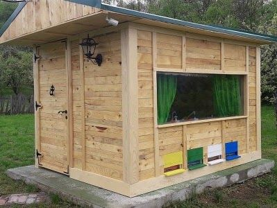
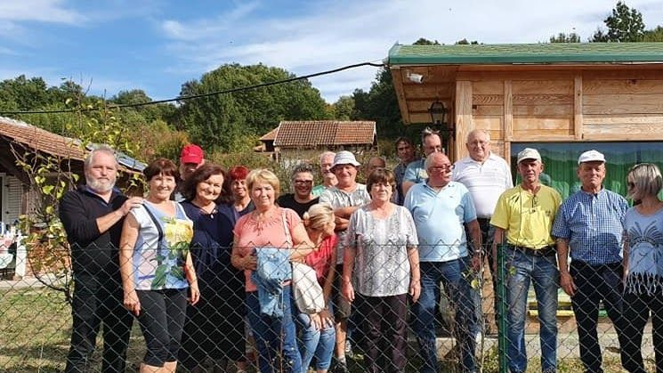

The aromatic vapours of propolis, honey, wax, royal jelly and bee bread, together with the scents of flowers, nectar and wax released from a hive full of bees, fill the air around the apiary. Many people find time spent in this environment relaxing and refreshing – they sleep better and their appetite and mood improve. Api-chamber sessions are a newer branch of apitherapy, a traditional practice that uses bee products.
The api-chamber is a small wooden house used for breathing air from the hive or for lying above the hives, with no direct contact with the bees. Both are offered from April to mid-August, when the bees are active. The hives used for this must hold strong, healthy colonies, and they are not treated against varroa with chemicals while sessions are running. We fight varroa only by natural means – with a drone comb frame, and later with organic acids.


Hive air is inhaled through special masks connected to a fan placed over an opening in the hive lid. A dial controls how much air flows from the hive. The masks have a one-way valve so that exhaled air does not go back into the hive.
Many visitors use these sessions to strengthen their general resilience – athletes, children and older people – and they are especially popular with people who have trouble with their airways (nose, sinuses, throat, bronchi).
A session lasts 10 to 20 minutes, once or twice a day; the number and schedule of sessions are arranged individually.
Lying above the hives is the second method offered in the api-chamber. You lie on your back on a wooden lid with the hives underneath, knees bent, arms by your sides, palms down. You feel the micro-vibrations made by the bees' wings and their work in the hive – a kind of vibration massage. The steady hum of the bees works like a form of "meditation": it relaxes and calms. Bees in the hive are also believed to ionise the air.
A session lasts from 30 minutes to an hour. It is especially appreciated by people under stress, with chronic fatigue or sleep problems.

Time in the api-chamber is not a substitute for medical treatment prescribed by a doctor.
 Visit by pupils and teachers of “Olga Milošević” Primary School
Visit by pupils and teachers of “Olga Milošević” Primary School Visit by students and professors from the Netherlands
Visit by students and professors from the Netherlands
Visit by fellow beekeepers from Slovenia Visit by fellow beekeepers from Slovenia
Visit by fellow beekeepers from SloveniaApi-chamber sessions are booked by phone.